UI_orb_red.png clipped to a moving surface; the glass
cover sits over it always, and the bezel laps its rim. Defaults are your stiffness 20 /
damping 10 — which is overdamped, so the level glides without dipping past target. Drop damping
under ~8.9 to get the overshoot back; the readout tells you which side of critical you are on.